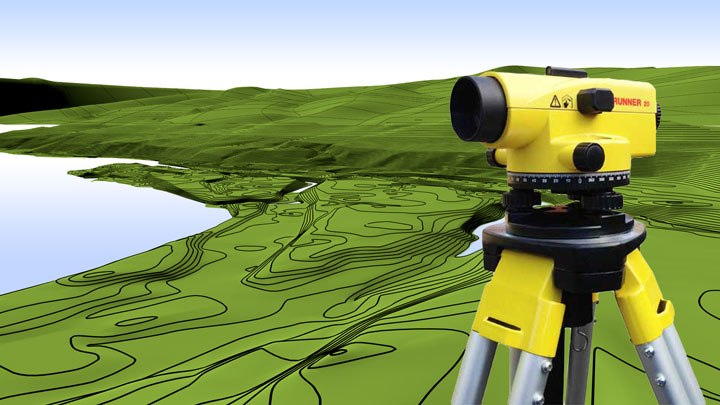
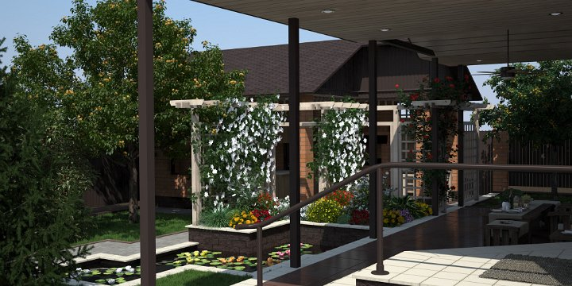
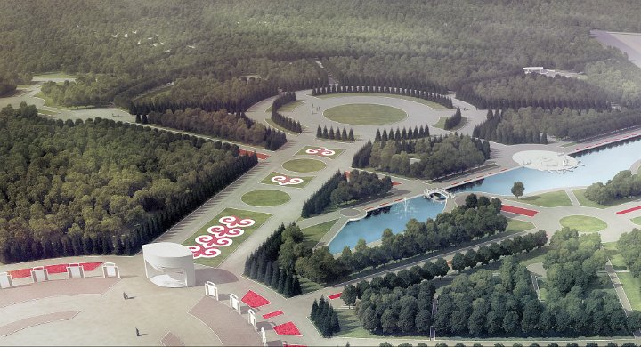

|

Мы встречаем места, где наблюдается очевидная гармония между всеми элементами природы – поверхностью земли, строениями и растительностью. Такие места обладают естественно возникшим гармоническим ландшафтным характером. ...
Подробнее >>>

Инженерное благоустройство территории – это мероприятия направленные на создание благоприятных условий для жизни и деятельности людей.
Инженерное благоустройство территории включает в себя
...
Подробнее >>>

Достаточно ли разработанного линейного красивого плана участка для строительства сада, и какие обстоятельства необходимо учитывать дополнительно? Возможен ли правильный, красивый сад без красивого плана? ...
Подробнее >>>

... По мнению некоторых людей, красота и полезность взаимно исключают друг друга. Отсюда вытекают многие ошибочные представления, проявляющиеся в ... Подробнее >>>
Ландшафтно-экологическая архитектура – это искусство создавать или организовывать пространство в соответствии с законами геоэкологии, эстетики, красоты, гармонии природы и хозяйственной деятельности людей ... Подробнее >>>
Сад - это лучшее, что сумело создать человечество со времен изгнания из Рая Адама и Евы ... Подробнее >>>

Состав и содержание работ по планированию объектов ландшафтной архитектуры.
Устройство ландшафта частных владений признано сферой влияния ландшафтной архитектуры — отрасли, возникшей на границе архитектуры, паркостроения и садоводства и так называемого ландшафтного дизайна ... Подробнее >>>

Увиденная природа есть ландшафт; ландшафт, в котором первопроходцы проложили хотя бы одну тропу, - это уже культурный ландшафт, поскольку места в нем оценены и предуготовлены к освоению. ... Подробнее >>>
Приведена информация об основных типах культурного наследия и даны предложения о путях решения управленческих задач по охране и использованию культурного наследия в национальных парках. Особое внимание уделено категории "культурный ландшафт". ... Подробнее >>>

Труд крупного ландшафтного архитектора Джона Ормсби Саймондса представляет собой интересные обобщения личного опыта автора и самых разнообразных тенденций в ландшафтном проектировании. ... Подробнее >>>
|